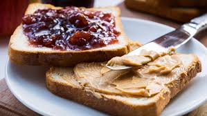

Peanut Butter and Jelly
Servings
1

Ingredients
- 2 slices of bread
- 2 tablespoons peanut butter
- 2 teaspoons berry jam
Instructions
- Take out all the ingredients, a plate, and a butter knife
- Place the bread slices face up
- Spread the peanut butter evenly over one slice of bread
- Spread the jam evenly on top of the peanut butter
- Place the other bread slice on top
- Cut the sandwich diagonally in half if you are feeling fancy
- Enjoy the peanut butter and jelly sandwich! Perhaps even take it with you on a hike!